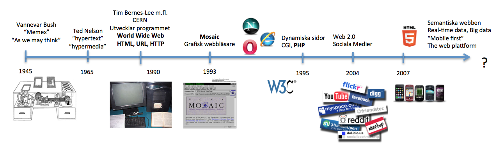

Web Management, 1IK424
Linnéuniversitetet, VT2013
Kursintroduktion
http://orion.lnu.se/pub/education/course/1IK424/VT13/sessions/F01.html

John Häggerud

- Universitetsadjunkt i datavetenskap, HIK 2003
- Kursansvarig, examinator, föreläsare, laborationshandledare
- Skype: john-hik, john.haggerud@lnu.se
Emil Carlsson

- Webbprogrammerare
- Laborationshandledare
- Gillar PHP och reguljära uttryck
- Skype: emil.lnu, E-post: ec222ba@student.lnu.se
VARFÖR ÄR VI HÄR?
- Få förståelse för hur en dynamisk webbapplikation är uppbygd och fungerar
- Få grundläggande för webbutveckling
- Få grundläggande kännedom om serverscriptspråket PHP
- Lära er skapa en dynamisk webbapplikation med hjälp av publiceringssystemet Wordpress
HUR?
Vad som förväntas av dig
Är här för att du vill lära dig!
Erfarenhet av HTML + CSS
Känner igen programatiska termer (variabel, array, if-sats, for-loop ect.)
Klarar av självstudier
Treveckorsreglen
För att bibehålla sin plats i kursen krävs att man
klarar den så kallade treveckorsreglen.
Det innebär...
...att man efter tre veckor (vecka 16) ska ha blivit godkänd på laboration 1...
...annars sker en avregistrering från kursen
Examination
Delkurs 1 - PHP (3 hp)
Betyg: U/G - Noteringar görs om antal lösta extrauppgifter som kan komma att på verka slutbetyget i kursen
Delkurs 2 - Wordpress (2 hp)
Betyg: U/G - Noteringar görs om antal lösta extrauppgifter som kan komma att på verka slutbetyget i kursen
Delkurs 3 - Projektarbete (2.5 hp)
Betyg: U/3/4/5 - Görs gruppvis, samverkan med Morgans kurs, examineras i denna kurs med avseende på wordpressutvecklingen
FRÅGOR???
OK, då kör vi!
Begrepp att reda ut
- Webben och webbapplikationer
- En dynamisk webbapplikations arkitektur
- Klientsida (frontend)
- Serversida (backend)
- Serverscriptspråket PHP
- Skillnad mellan javascript och PHP
- HTTP request och response
- HTML-formulär och "postad" data
-
Webbens utveckling

Vad är menas med en dynamisk webbapplikation?

EN sida som kan påverkas.
Webbsida - En specifik sida du kommer åt via en URL
Webbplats - En samling webbsidor
Webbtjänst - En tjänst som erbjuds via webbplatsen (blocket, recept o.s.v.)
Webbapplikation -
Vad är det som händer när vi "facebookar"?

Vad webbläsaren tolkar

OK. Vi trycker på knappen för att posta vårt inlägg? Sen då?
En webbläsares främsta uppgift är att tolka klientside-kod och presenetra ett gränssnitt för användaren.
Med klientsidekod menar vi främst HTML, CSS och Javascript.
HTML för struktur,
CSS för presentation,
JavaScript för interaktivitet
Webbläsaren bygger ihop ett så kallat HTTP-meddelande
HTTP- beskrivning
Detta http-meddelande innehåller bland annat texten vi vill posta på facebook.
Andra saker som skickas med:
Information om att jag är jag,
SKÄRMDUMP HTTP-meddelandet
Detta skickas till facebooks webbserver (eller rättare sagt en av deras webbservrar)
Man kallar detta meddelande för ett HTTP-request med HTTP metoden post
"Vi skickar en förfrågan om att få posta data/information på facebooks server"
Internet - www
Meddelandet passerar datorer, nätverk, sladdar, routrar, servrar o.s.v.
Traceroute till facebook ger X antal servrar
Till slut hamnar vi hos facebook webbserver. Den står i USA? Eller luleå?
Webbservern - Backend
En webbserver förstår HTTP-meddelandet som webbläsaren skickar
Vem är användaren? - PHP-kod läser av meddelandet, kollar i sin databas
Vad vill användaren göra? - POST, med data
Utför detta. Spara informationen som skickas i (rätt) databas.
Skicka tillbaka ett svar.
SKÄRMDUMP HTTP-meddelandet
Till slut hamnar vi hos facebook webbserver. Den står i USA? Eller luleå?
Vad är det vi ska koncentrera oss på?
FÖRKLARA webbapplikationens roll,
vad vi ska lära oss
Vad vi inte ska lära oss (DATABAS, modellering eller kod mot)
Problem vid webbutveckling
FÖRKLARA
* 3.14
Jo, men vad ska vi GÖRA?
Kursens första del handlar om PHP-programmering.
PHP körs på en webbserver, en specifik dator med specifika program som levererar webbsidor till webbläsare
Ni ska alltså skriva kod som läggs på en webbserver och sen dynamiskt genererar webbsidor (HTML, CSS och javascript)
Vad är det för mening med att kunna PHP?
- Förståelse för utvecklingsprocessen - programmering
- Wordpress är byggt på PHP
- Vanligt serverscriptspråk idagsläget - stort stöd på webbhotell
- Wikipedia, facebook, 65%?
- Det finns flera serverscriptspråk, C# (ASP.NET), Ruby, Python o.s.v.
PHP är ett serverscriptspråk
Ett av de vanligaste, stort stöd på många webbhotell
PHP är fritt/gratis att använda
Wordpress är skrivet i PHP
OBS! Det finns flera serverscriptspråk, C# (ASP.NET), Ruby, Python o.s.v.
PHP - Lite historik
PHP was originally created by Rasmus Lerdorf in 1995.
Webben hade ej exploderat - Orsak till dagens populär
While PHP originally stood for Personal Home Page, it is now said to stand for PHP: Hypertext Preprocessor
VISA BILDEN MED TIDSAXLEN
While PHP originally stood for Personal Home Page,[8] it is now said to stand for PHP: Hypertext Preprocessor
http://sv.wikipedia.org/wiki/PHP
Hur ser det ut?
KODDUMP AV EN WORDPRESSIDA - Gärna komplicerad
Hello World!
Vårt första PHP-exempel!
Låt ditt PHP-script skapa en HTML-sida som skriver ut "Hello World!"
Demo
Example 1
Vad: Vårt första PHP-exempel!
Problem: Låt ditt PHP-script skapa en HTML-sida som skriver ut "Hello World!"
Varför: Förståelse för PHPs uppgift av att rendera HTML och hur HTML och PHP-kod blandas
DEMO
 Detta verk är licensierat under en
Creative Commons Erkännande-IckeKommersiell-DelaLika 3.0 Unported Licens.
Detta verk är licensierat under en
Creative Commons Erkännande-IckeKommersiell-DelaLika 3.0 Unported Licens.